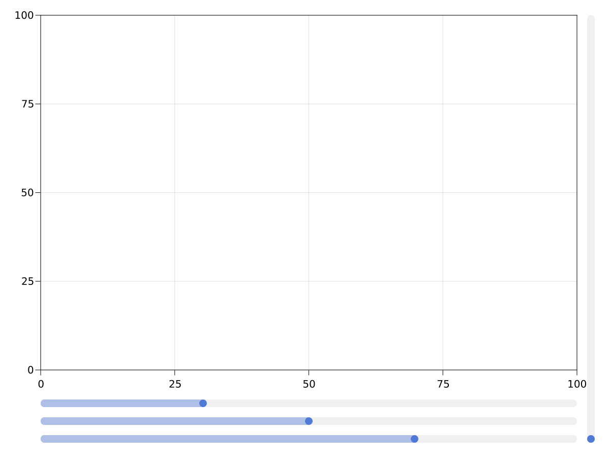
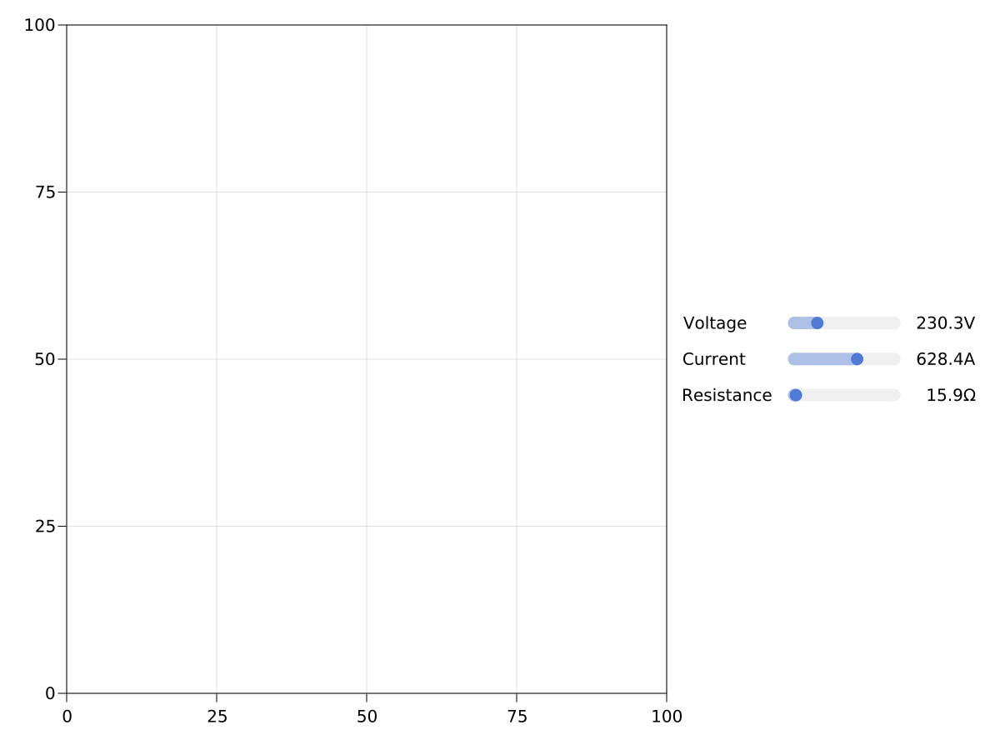

Slider
A simple slider without a label. You can create a label using a Label object, for example. You need to specify a range that constrains the slider's possible values. You can then lift the value observable to make interactive plots.
using CairoMakie
fig = Figure(resolution = (1200, 900))
Axis(fig[1, 1])
sl1 = Slider(fig[2, 1], range = 0:0.01:10, startvalue = 3)
sl2 = Slider(fig[3, 1], range = 0:0.01:10, startvalue = 5)
sl3 = Slider(fig[4, 1], range = 0:0.01:10, startvalue = 7)
sl4 = Slider(fig[:, 2], range = 0:0.01:10, horizontal = false,
tellwidth = true, height = nothing, width = Auto())
To create a horizontal layout containing a label, a slider, and a value label, use the convenience function AbstractPlotting.MakieLayout.labelslider!, or, if you need multiple aligned rows of sliders, use AbstractPlotting.MakieLayout.labelslidergrid!.
using CairoMakie
fig = Figure(resolution = (1200, 900))
Axis(fig[1, 1])
lsgrid = labelslidergrid!(
fig,
["Voltage", "Current", "Resistance"],
# use Ref for the same range for every slider via internal broadcasting
Ref(LinRange(0:0.1:1000));
formats = [x -> "$(round(x, digits = 1))$s" for s in ["V", "A", "Ω"]],
width = 350,
tellheight = false)
fig[1, 2] = lsgrid.layout
set_close_to!(lsgrid.sliders[1], 230.3)
set_close_to!(lsgrid.sliders[2], 628.4)
set_close_to!(lsgrid.sliders[3], 15.9)
If you want to programmatically move the slider, use the function AbstractPlotting.MakieLayout.set_close_to!. Don't manipulate the value attribute directly, as there is no guarantee that this value exists in the range underlying the slider, and the slider's displayed value would not change anyway by changing the slider's output.